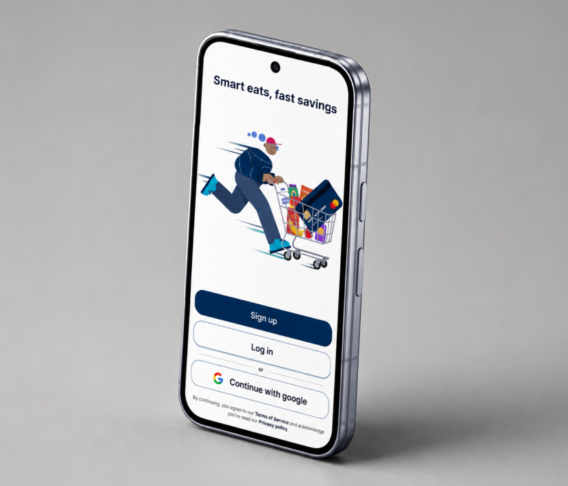

A hyper-local app connecting consumers with discounted surplus food to reduce waste and save money.

Every day, local restaurants and bakeries throw away perfectly good food simply because it wasn't sold by closing time. Meanwhile, students and budget-conscious individuals are constantly looking for affordable, high-quality meals.
The goal of Quiklyy was to bridge this gap by creating a hyper-local marketplace that allows businesses to upload their surplus inventory at a steep discount, giving users real-time notifications to claim the food before it goes to waste.
We designed a frictionless, map-based interface that immediately shows users available deals within a 5-mile radius. By prioritizing speed and geolocation, users can secure a meal in under 3 taps.
For businesses, we created a simplified vendor dashboard that allows them to snap a photo, input the original and discounted price, and publish the listing in seconds, ensuring it doesn't interrupt their busy closing routines.
A dynamic map that clusters nearby deals, allowing users to visually browse and filter by food type (e.g., Bakery, Groceries, Meals) instantly.
Users can "Favorite" specific local stores and receive push notifications the exact second a surplus deal goes live.
To prevent food from being claimed and abandoned, we implemented a seamless integration with Apple Pay and Google Pay to reserve the meal.
A robust set of tools for restaurant owners to track how much waste they've diverted and revenue they've recovered each month.
Designing Quiklyy taught me the importance of designing for two completely different user personas simultaneously. The consumer app needed to feel fun, urgent, and highly visual, while the vendor app needed to be ruthlessly efficient and data-driven.
By reducing the friction on the vendor side, we ensured a steady supply of deals, which inherently solved the retention problem on the consumer side.